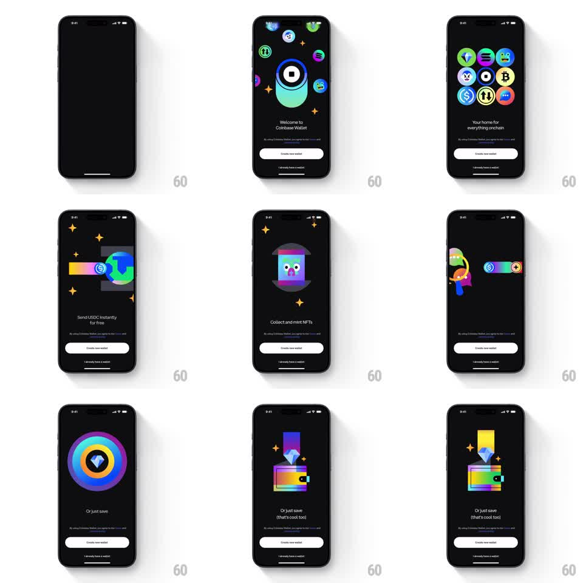

Media
Frame-by-frame

Rebuild this animation 1:1: Coinbase Wallet's onboarding sequence - a morphing carousel of neon crypto vignettes that cycles between feature slides with fluid shape transitions.

Rebuild this animation 1:1: Coinbase Wallet's onboarding sequence - a morphing carousel of neon crypto vignettes that cycles between feature slides with fluid shape transitions. ## Integration Integration: stack-agnostic spec - springs given as stiffness/damping, timed motions as duration + curve; map every value to your framework and animation library of choice. ## Scene Black onboarding screens: centered animated vignette, feature title below, "Create new wallet" / "I already have a wallet" CTAs pinned at the bottom. Slides cover welcome, send USDC, mint NFTs, and save. ## Motion spec Pattern: auto-advancing morph carousel, ~2.5s per slide. - Each vignette is a looping animated scene (orbiting coin bubbles, a rainbow tube around a globe, a bobbing character, a spinning concentric ring). - On advance, the current scene's shapes morph into the next scene's shapes (600ms, ease-in-out) - circles split, rings expand, elements fly along curved paths rather than crossfading. - The feature title crossfades at the morph's midpoint; CTAs stay pinned and static. - Auto-advance pauses while the user touches the screen; a swipe jumps straight to the next slide. ## Calibration - Every element should land in the next scene's composition - no element may pop in from nothing. - Saturated gradients on pure black; keep the palette neon and the background untouched. ## Reduced motion Slides crossfade (300ms); each scene renders its first frame statically. ## Don't miss - The transition is the product: the scenes share shapes so the morph has real correspondence. - The CTAs never animate - the motion lives entirely in the vignette zone.